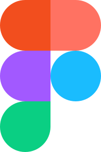

Active Clones
1 isolated app instance registered
Antigravity IDE (Clone 1)
Antigravity IDE
Clone Mac apps in milliseconds with APFS Copy-on-Write, isolated Keychains, distinct Dock badges, built-in Voice Memo, and Voicofski AI Text-to-Speech & Translate.



Preview custom macOS Dock badges or experience Voicofski’s selection trigger, 6-language translation review, and Notch HUD player right in your browser.
Native macOS subsystems deliver instantaneous cloning and complete runtime isolation.
Instantaneous bundle duplication via file system metadata cloning. Multi-gigabyte apps duplicate in milliseconds using 0 bytes of extra SSD storage.
Spins up a dedicated duplix.keychain-db, isolates HOME & GEMINI_DIR (while bridging .ssh & .gitconfig), and suffixes URL schemes — keeping Antigravity IDE & Electron/Go accounts 100% independent.
CoreGraphics renders crisp vector indicators in all 10 macOS icon resolutions with drop shadows and contrast rings for high readability in Dark & Light modes.
Integrated system scanner detects installed apps automatically. One-click batch cloning (up to 5 copies), live badge customizer, and clean data wiping.
Automatic framework inspection identifies Electron, Chromium, Gecko, and Native Cocoa to apply tailored sandbox flags and isolated socket descriptors.
Automates recursive quarantine stripping and ad-hoc code signature injection, ensuring seamless launches on Apple Silicon without security warnings.
When original applications receive updates, Duplix detects version divergence. Update any clone with 1 click while 100% of your logins, extensions, and session data remain untouched.
Select text anywhere on macOS for a subtle 2-stage icon trigger to speak directly or translate across 6 languages with in-app review. Powered by gemini-3.8-flash-tts (Lora & Bodi), Keychain multi-key failover, and a Notch HUD player.
Built directly into Duplix’s unified menu bar with a global ⌥⌘ hotkey, fullscreen-ready floating waveform HUD, automatic ⌘V chat attachment, live permission checks, and silent Launch at Login.
Upgrade existing clones anytime without wiping extensions or workspaces. Use Repair Isolation in the UI or run duplix repair --all to inject dedicated Keychain and URL scheme isolation.
Zero disk overhead and native execution compared to traditional workarounds.
| Criteria | Duplix | User Accounts | Virtual Machines | Commercial Cloners |
|---|---|---|---|---|
| Extra Disk Space | 10 GB to 30 GB | 25 GB to 60 GB | Full clone size (GBs) | |
| Simultaneous Windows | Inside VM Window | |||
| Distinct Dock Badges | VM App Icon | Limited | ||
| System Memory Impact | Moderate | Low | ||
| Built-in Voice Memo (⌥⌘) | ||||
| Voicofski AI Voice & Translate | ||||
| Price & Licensing | Free (macOS built-in) | $99 / year | $20 to $39 / year |
go-keyring) store OAuth credentials in the shared macOS login Keychain and ~/.gemini. Duplix v1.2.0 provisions an isolated duplix.keychain-db per clone, redirects HOME, CFFIXED_USER_HOME, and GEMINI_DIR while symlinking developer configs (.ssh, .gitconfig), and isolates CFBundleURLSchemes so logging out or switching emails in one clone never affects others.
duplix delete <name> in the terminal. The bundle and its associated Application Support data are removed cleanly.
gemini-3.8-flash-tts with Lora & Bodi voices), Voicofski lets you add multiple personal API keys stored safely in macOS Keychain with automatic sequential failover on quota limits (resetting at 09:00 UTC), saves overflow requests to a Pending Queue, and plays audio through a sleek Notch HUD with live waveform, seekbar, Replay, and local History.
⌥⌘ anywhere (including over fullscreen apps) to open the floating waveform HUD, speak, and press ⌥⌘ again to automatically attach a crisp compressed .m4a recording into your active AI chat via ⌘V. Enable Start Voice Memo automatically at macOS Login so it launches silently in the menu bar after every restart.
/Applications/Duplix.app. Permissions immediately turn green and text-selection triggers work across every app.
curl -fsSL https://businessmanshah-a11y.github.io/Duplix/install.sh | bash in Terminal or drag Duplix.app from Duplix.dmg into /Applications to update in place. Duplix automatically preserves 100% of your registered clones, isolated data, and settings while replacing the app cleanly without creating duplicate copies. For Homebrew, install via brew install --cask https://raw.githubusercontent.com/businessmanshah-a11y/Duplix/main/Casks/duplix.rb.
Native app cloning, complete session isolation, and AI workflows. Universal macOS package available now, with Windows, Linux, and Mobile in active development.
Instant APFS zero-overhead cloning, isolated Keychain & URL schemes, distinct Dock badges, Voicofski AI TTS & built-in Voice Memo.
brew install --cask duplix
Simultaneous isolated instances for VS Code, Discord, Slack, and Chromium apps via custom --user-data-dir profiles and Taskbar badging.
Lightweight containerized sandbox isolation using Bubblewrap, Btrfs/XFS CoW reflink copying, and automated .desktop launcher generator.
Run up to 4+ isolated Instagram accounts without modifying APKs or battery drain via Android DevicePolicyManager Work Profile.
Companion app with Action Button voice memo recording, Voicofski text-to-speech Share Sheet integration, and URL schemes.